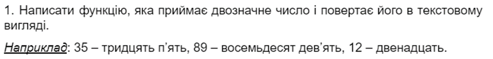
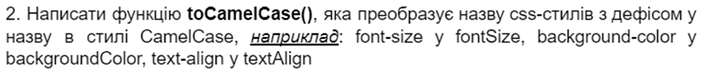
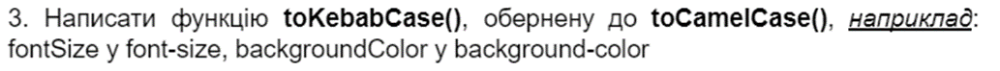
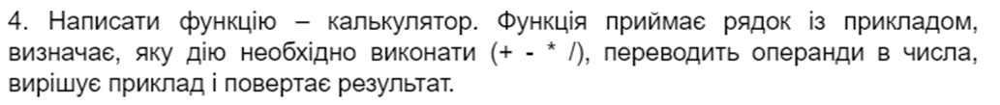
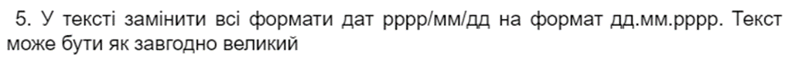
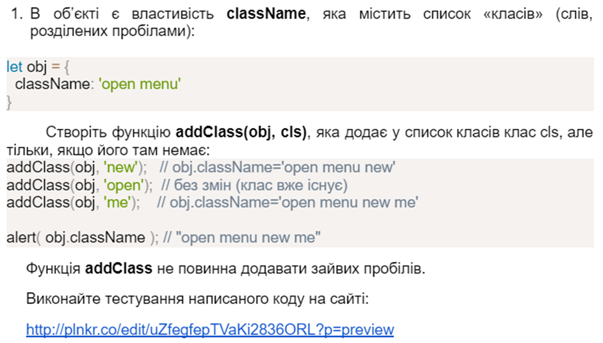
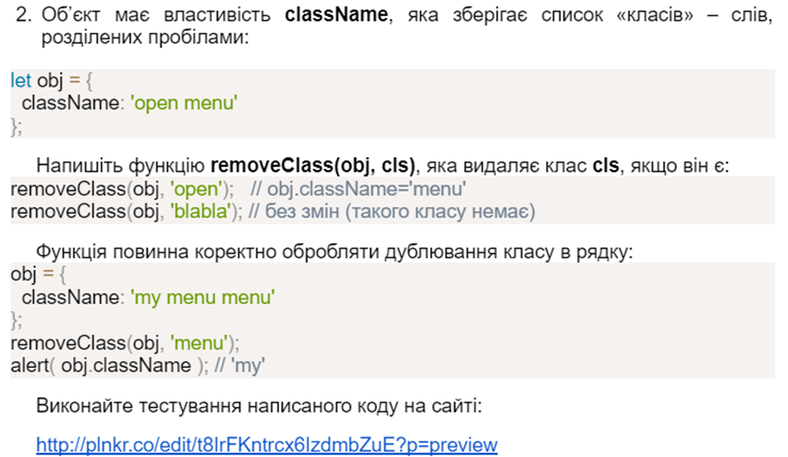
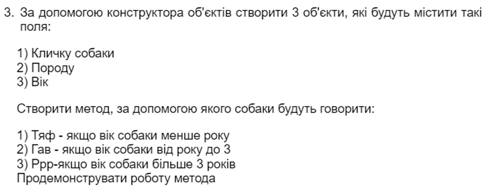
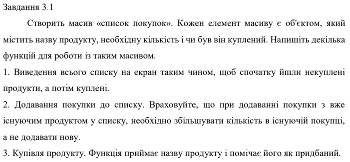
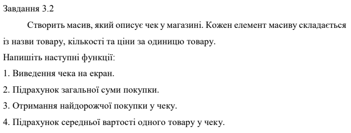

Завдання 2. Рядки(5 завдань)
Завдання 2.1.
Виконання завдання знаходиться тут.
Завдання 2.2.
Виконання завдання знаходиться тут.
Завдання 2.3.
Виконання завдання знаходиться тут.
Завдання 2.4.
Виконання завдання знаходиться тут.
Завдання 2.5.
Виконання завдання знаходиться тут.
Завдання 3. Об'єкти(3 завдання)
Завдання 3.1.
Виконання завдання знаходиться тут.
Завдання 3.2.
Виконання завдання знаходиться тут.
Завдання 3.3.
Виконання завдання знаходиться тут.
Завдання 4. Масиви(2 завдання)
Завдання 4.1.
Виконання завдання знаходиться тут.
Завдання 4.2.
Виконання завдання знаходиться тут.